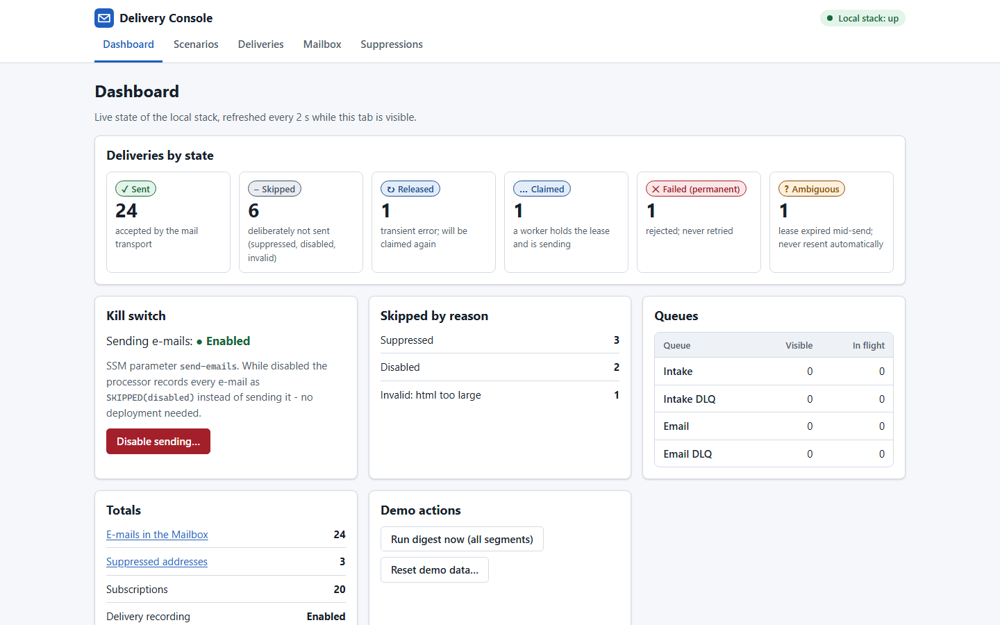
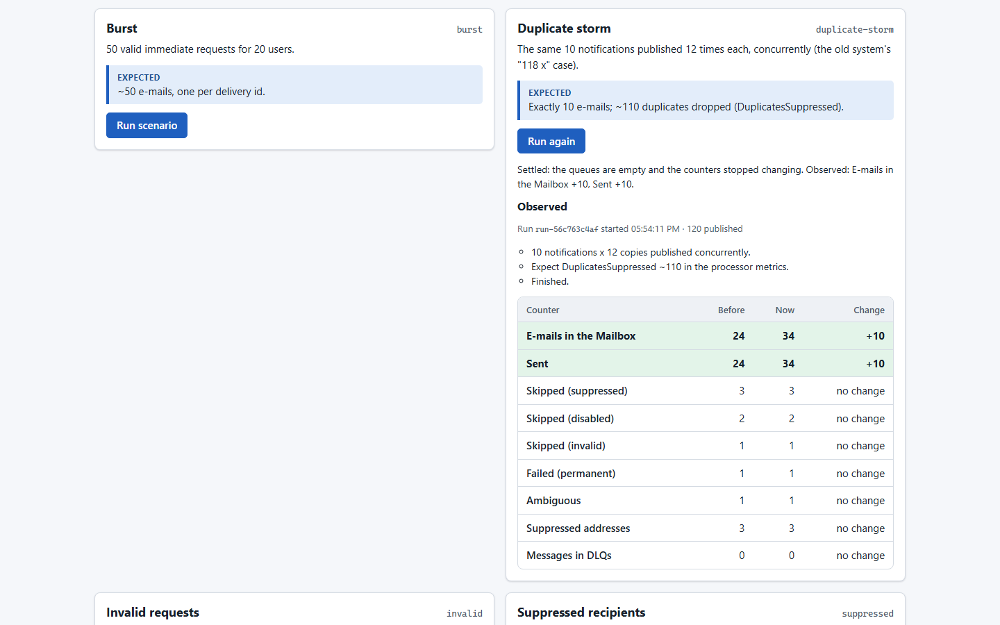

On this page
Executive summary
The whole story in thirty seconds.
The problem
Over one week 87 % of the “immediate” notification e-mails were duplicates, and one user got the same one 118 times. Around it, a timeout re-sent whole batches, bounced addresses kept being mailed and a content filter silently blocked every daily digest for days.
The approach
Claim each e-mail with a conditional write before sending it, classify every error as permanent, transient or unknown, close the bounce feedback loop, and give sending two kill switches that fail safe.
The outcome
Each notification goes out at most once, and every delivery ends in a named state: sent, skipped with a reason, failed with a reason, or ambiguous with an alarm for a human. No e-mail is lost silently.
The eleven failures
The first version was the obvious one: a scheduler, a queue, a processor that sent through SES and wrote “sent” afterwards. It worked, until it didn’t.
| Symptom | Root cause | Fixed by |
|---|---|---|
| 87 % duplicates in a week; one user mailed 118 times | The “already sent?” check read a record written only after the send, while runs overlapped and retried | claim before send |
| One bad message retried into the dead-letter queue | Invalid input was thrown like a transient error | permanent errors, never retried |
| One failure re-sent the other nine e-mails of its batch | No partial batch responses | per-message retries |
| A slow call re-sent a whole batch | A Lambda timeout redelivers every record, sent or not | a remaining-time guard |
| Errors after a successful send caused duplicates | A failed metrics flush marked a sent e-mail as failed | nothing after the send throws |
| Large e-mails broke the audit log | The body went into a DynamoDB item, which tops out at 400 KB | a 380 KB item budget |
| Addresses and bodies appeared in logs | The raw event was logged on error | masked, hashed, tested |
| Every daily digest silently blocked for days | A “suspicious content” regex matched content= in a template’s <meta> tags | escaping, not blocklists |
| Hard bounces kept being mailed | Nothing consumed bounce and complaint events | a suppression list |
| A poison message sat in the DLQ unnoticed | No alarm, no documented redrive | DLQ alarms and a runbook |
| Turning e-mail off needed a deployment | The switch was an environment variable | a fail-safe runtime toggle |
A composite of problems met in production systems, not one company’s incident; product details and numbers are changed. Full write-up: docs/01-the-problem.md.
What the replacement had to guarantee
Eleven failures became ten requirements: together they are the acceptance test for the design.
- Never send twiceNot across overlapping runs, retries, redeliveries, timeouts or crashes.
- Never lose one silentlyEvery notification ends sent, skipped with a reason, failed with a reason, or flagged for a human.
- Classify every errorPermanent errors are recorded once and never retried; transient ones are retried per message, never per batch.
- No timeout redelivers finished workA function that runs out of time must not send what already went out.
- Respect bounces and complaintsAn address that bounced permanently or complained is never mailed again.
- No recipient data in logsAddresses and bodies stay out of logs and metrics.
- Safe templates by constructionEscaping by default, not content blocklists.
- Off in seconds, and fail safeNo deployment to stop sending, and a switch that can’t be read means “off”.
- Capped send rateProtect the SES quota and the sender’s reputation.
- Every failure visibleDead-letter queues, ambiguous deliveries, bounce and complaint rates, all alarmed.
Who it serves
Notification e-mail has three audiences, and each one was let down by a different failure.
Recipients
The product’s users
- Job
- Hear about a report, an invoice or a shared document once, on time, and get a digest in their own morning.
- Pain points
- The same notification many times over; digests that never arrived.
- What they got
- One e-mail per notification, and at most one digest per local day.
Operators
Keep e-mail flowing, and stop it fast
- Job
- Notice a problem before users do and stop a bad send fast.
- Pain points
- A DLQ with no alarm, poison messages retried, a deployment just to switch sending off.
- What they got
- A fail-safe kill switch, alarms on every DLQ and on ambiguous deliveries, and a runbook for each.
Privacy & deliverability
Protect user data and the right to send
- Job
- Keep the sending account in good standing and recipient data out of logs.
- Pain points
- Bounced addresses kept being mailed; addresses in logs; a regex that blocked mail silently.
- What they got
- A suppression list fed by SES, bounce and complaint alarms at AWS’s review level, before its pause level, PII-free logs checked by a test.
The product
A local Delivery Console makes the guarantees visible: run a scenario, watch deliveries move through their states, open the e-mail each one produced.

The dashboard over the local stack (make demo). The console runs only against LocalStack and Mailpit and is never deployed; in AWS the same facts live in DynamoDB, CloudWatch and SES.

The old system’s failure as a one-click scenario: the same 10 notifications published 12 times concurrently produce exactly 10 e-mails.
Solution architecture
Deciding who gets what is slow and data-heavy; handing one e-mail to SES is fast and must be retried per message. So the two are split by a queue, and the processor does nothing but claim, send and record.
- Send line
- Feedback line
- Fail line
System map
Figure 1The notifiers never call SES, and the processor never renders or looks anything up except the suppression list and the delivery state. The send rate is set in exactly one place: the processor’s event-source concurrency cap. Left out for clarity: the pending-digest table between the two notifiers and the SSM toggles the processor reads.
| Piece | Locally (docker compose) | On AWS (CDK) |
|---|---|---|
| Event bus, queues, tables, toggles | LocalStack | EventBridge, SQS with KMS, DynamoDB with KMS and point-in-time recovery, SSM |
| Notifiers, processor | Long-polling worker containers, same handlers | Lambda with SQS event sources |
| Digest schedule | A job per segment | EventBridge Scheduler, 16 schedules |
| Mailpit over SMTP | SES v2 with a configuration set | |
| Bounces, complaints | A job that builds the same event | SES → EventBridge → feedback function |
Decisions
Six architecture decision records, one per hard constraint: e-mail can’t be taken back, queues redeliver, functions time out, SES watches bounce rates, mistakes need an off switch, and users live in many time zones.
Claim before send; at-most-once with an alarmed AMBIGUOUS state
ADR-0002- Context
- Once SES accepts an e-mail it can’t be taken back, and SES has no idempotency key. A “sent” record written after the send let every overlap send again.
- Decision
- A deterministic delivery id, claimed by a conditional write with a 120-second lease before the send. An unknown outcome becomes
AMBIGUOUS: alarmed, never resent. - Result
- No duplicate from overlaps, retries, redeliveries or partial batches. The rare crash leaves a missing e-mail a human sees, never a silent one.
Classify every error; retry per message, never per batch
ADR-0003- Context
- Invalid messages were retried, one failure failed the whole batch, and a timeout redelivered everything.
- Decision
- Permanent, transient and unknown-outcome classes; partial batch responses; a guard that hands records back 30 seconds before the deadline; nothing after the send is re-thrown.
- Result
- A poison message costs one log line, and a timeout can never resend e-mails that already went out.
Split rendering from delivery
ADR-0001- Context
- One function did slow, batch-shaped recipient work and fast, per-message sending under one retry policy.
- Decision
- Notifiers render one complete e-mail per queue message; the processor only claims, sends and records.
- Result
- A processor small enough to reason about every failure path, and one place that sets the send rate.
Close the feedback loop: bounces and complaints suppress
ADR-0004- Context
- Nothing consumed bounce events, and SES reviews an account at about a 5 % bounce rate.
- Decision
- A configuration set publishes events to EventBridge; permanent bounces and complaints go on a suppression list keyed by the address’s SHA-256.
- Result
- One bounce stops all future mail to that address, and alarms fire at SES’s review level, well before it pauses sending.
Two kill switches, both fail safe
ADR-0005- Context
- Stopping a bad send must take seconds, and a switch that can’t be read must not mean “send”.
- Decision
- An SSM toggle cached for 5 minutes, disabled when nothing can be read; plus a deploy-time switch where anything but
falsedisables sending. - Result
- Off without a deployment, and a typo or a missing value can never turn sending on.
The daily digest as independent segments, in local time
ADR-0006- Context
- One daily job grows into the 15-minute Lambda limit, a retry re-sends to everyone, and 00:00 UTC is someone’s night.
- Decision
- 16 segments run hourly with retries off; each picks the users whose local morning it is. The local date is part of the delivery id.
- Result
- Each run is a sixteenth of the work and safe to re-run; one digest per user per local day.
Implementation
Two mechanisms carry the guarantees: the state machine every delivery goes through, and the loop that turns a bounce into a suppression.
Every delivery ends in a named state
Figure 2A worker that loses the claim finds SENT and drops its copy, or finds a live claim and retries later. A worker that dies between the send and the mark leaves an expired lease: the e-mail may or may not be out, so it becomes AMBIGUOUS instead of being sent again. The SES client itself never retries a send.
Closing the feedback loop
Figure 3The delivery id travels as an SES message tag, so every feedback event joins back to its delivery log. Bounce-rate and complaint-rate alarms fire at 5 % and 0.1 %, where SES starts a review, not where it pauses sending.
Three kinds of error, three different actions
| Class | Examples | Action |
|---|---|---|
| Permanent | invalid JSON or schema, suppressed recipient, sending disabled, SES rejection | record the reason once, delete the message |
| Transient | SES throttling, 5xx, network errors, a live claim held elsewhere | release the claim, return only that record to the queue |
| Unknown outcome | a timeout or connection reset after the request went out | AMBIGUOUS, alarm, no retry |
| After the send | delivery-log write, the mark, the metrics flush | catch, log, count; never re-throw |
Running it in production
Every alarm has a runbook entry, and the first one is how to stop all mail.
- Stop all sending nowFlip the SSM toggle; disabled notifications are recorded as
SKIPPED(disabled), not queued to burst out later. - Dead-letter queuesEvery DLQ alarms; once the cause is fixed, the runbook redrives it with
StartMessageMoveTask. - Ambiguous deliveriesLook up the SES events by delivery id: an event means it was sent, so mark it
SENT; none after an hour means release it and re-request, and the next claim sends it once. - Queue ageAn alarm fires when the oldest message in the email queue is more than 15 minutes old.
- Bounce and complaint spikesAlarms at the review level: find the category or template behind it, and disable sending if the list or template is bad.
- Unsuppressing an addressA deliberate, manual action; manual entries are the audit trail.
- A failed digest segmentAlarmed and re-run by hand; idempotent, so a re-run never sends twice.
- Going liveProduction starts with sending disabled: verify the domain, leave the SES sandbox, then enable.
Trade-offs
Every decision gave something up. These are the costs the ADRs accept on purpose.
| Chose | Instead of | The cost, and why it’s worth it |
|---|---|---|
| At-most-once with an alarmed AMBIGUOUS state | At-least-once: resend when unsure | In the rare crash window an e-mail can be missing until a human looks. A duplicate is visible to the user and erodes trust; a missing one is alarmed. |
| A claim in DynamoDB | SQS FIFO content-based deduplication | One more table and a lease to tune. FIFO deduplicates for 5 minutes; digests and retries span hours. |
| Scheduler retries off | Automatic retries of a failed segment | A failed segment waits for a person. A retry on top of a run that may still be sending is how the 118-times duplicate began. |
| Drop mail while disabled | Hold it until sending resumes | Skipped notifications must be re-requested, but switching back on never releases a burst of stale mail. |
| A 500 KiB message cap | One message per digest, whatever its size | Large digests arrive in parts, each with its own delivery id; ten messages always fit one Lambda invocation. |
| A capped send rate | Sending as fast as Lambda scales | Bursts wait in the queue, so SES throttling stays rare and the sender’s reputation is protected. |
| A toggle cached for 5 minutes | Reading the switch on every send | Up to 5 minutes to take effect, in exchange for a stale-but-safe value when SSM is unavailable. |
Results
Every requirement maps to a mechanism, and the end-to-end guarantees run in CI on every change.
- Each notification sent at most onceOverlaps, retries, redeliveries, partial batches and timeouts all map to one claimed delivery id.
- Nothing lost silentlyEvery delivery ends in a named state; the unknown ones alarm.
- Bounced addresses never mailed againSES feedback becomes a suppression list checked before every claim.
- Off without a deployment, safelyA runtime toggle that takes effect within its 5-minute cache, and reads as “off” when it can’t be read.
- No recipient data in logsAddresses masked or hashed, bodies never logged; a test scans every log line.
- Verified, not assertedA compose smoke test runs duplicates, re-publish, digests, suppression, the kill switch and bounce feedback in CI.
What the CI smoke test showed on its last run
| Scenario | Outcome |
|---|---|
| 100 requests, with duplicates and invalid ones | 24 e-mails, one per delivery id; 2 skipped as suppressed; both DLQs empty |
| The same requests published again | 0 new e-mails |
| The daily digest, run twice | 24 digests, then 0 |
| Sending disabled | 5 recorded as SKIPPED(disabled), 0 sent |
System figures
| Setting | Value | Why |
|---|---|---|
| Claim lease | 120 s | Longer than any send; shorter than the queue’s visibility timeout. |
| Remaining-time guard | 30 s | The function finishes instead of timing out mid-batch. |
| Receives before the DLQ | 3 | Retries for transient errors, then an alarm. |
| Queue visibility timeout | 6× the function timeout | AWS guidance for SQS event sources. |
| Delivery-log item budget | 380 KB | Under DynamoDB’s 400 KB item limit, with staged shedding. |
| Digest segments | 16, hourly | Each run is a sixteenth of the work. |
| Bounce / complaint alarms | 5 % / 0.1 % | At SES’s review level, before its pause level. |
| Running cost | about $6 / month fixed | 100,000 e-mails a month come to roughly $15–25 at us-east-1 list prices. |
Configuration values and the smoke-test run from the repository’s documentation. Not verified here: a live AWS deployment. The stack synthesizes and is tested, but the author has not deployed it; production volumes are not published.
Try it yourself
The whole stack runs locally with Docker: LocalStack for EventBridge, SQS, DynamoDB and SSM, and Mailpit in place of SES.
$ git clone https://github.com/the3ma/reliable-email-delivery.git $ cd reliable-email-delivery $ make up # localstack, mailpit, both workers $ make seed # 40 users across 12 time zones, every 10th pre-suppressed $ make smoke # publish -> dedup -> suppression -> digest -> kill switch -> bounce $ make demo # the Delivery Console on http://localhost:8080
Every e-mail lands in Mailpit at http://localhost:8025. More in docs/03-running-locally.md and the operations runbook.
Lessons
What carries over to the next system with a side effect that can’t be undone.
- Claim before the side effect.A check that relies on a record written after the action can’t stop the duplicate it was built for.
- Unknown is a state, not a retry.When software can’t know whether it already acted, the safe move is to stop and tell a person.
- A kill switch must fail closed.If the switch can’t be read, it means off.
- Blocklists fail silently.Escape by default and treat a missing variable as an error: a bad template fails loudly on its first render, instead of mail being blocked for days.
What’s next
What the tests can’t prove without a real AWS account.
- A live deploymentSES sending and its EventBridge events, end to end, against a verified domain.
- KMS key policies at run timeCDK assertions check the policies; only a deployment proves every function can use them.
- Scheduler failures to the encrypted DLQTested in synthesis, not yet observed on AWS.
Sending mail that has to arrive exactly once?
I design and build systems like this one. If you are hiring, or have a problem that looks like it, I’d like to hear about it.